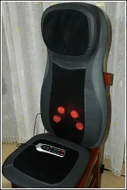
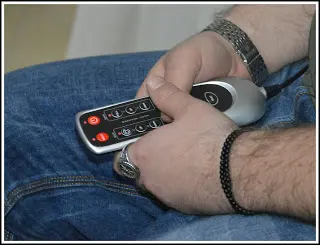

NAIPO MASSAGGIANTI - Sedile per il collo e schiena.

Naipo: Oggi voglio presentarvi NAIPO un'azienda che si occupa di fornire prodotti per massaggi utilizzando le più alte tecnologie moderne per una vita più sana. Ciò che voglio mostrarvi si tratta di due cuscini, di diverse misure e ovviamente per diverse funzioni.
Dunque, per essere chiari, l'intenzione del mio blog è quello di parlarvi e farvi conoscere prodotti sempre più innovativi. Articoli per il benessere personale e marchi che forse, vi sono ancora sconosciuti, ma non per questo sono meno qualificati.
Con i tempi che corrono e le stagioni che stanno finendo, siamo sempre più soggetti a dolori di vario genere, che sia la schiena, il collo le spalle, gambe; tutto ciò avviene per gli sbalzi di temperature che ovviamente il tempo ci fa vivere.
Naipo dunque, vuole aiutarci a superare queste piccole difficoltà che talvolta diventano davvero fastidiose.
Ho potuto testare anche un altro utilissimo prodotto. Il Sedile per il collo e schiena.
Il Sedile per il collo e schiena.

Un fantastico sedile che vi farà un massaggio praticamente a tutto il corpo. Un pò più ingombrante ma non per questo meno utile, anzi.
Il sedile massaggiante vi permetterà di rilassarvi completamente.
Ideale soprattutto per chi fa una vita sedentaria, ad esempio segretaria, avvocato, ragioniere ecc.
Come potete vedere in foto (ed in video più giù), anche questo sedile è fornito di sfere riscaldanti che ruotano dal basso verso l'alto e viceversa.
Dal video non si vede che sulla parte della testa, ha dei cuscinetti più sporgenti, in realtà anche all'interno di quei cuscinetti ci sono delle sfere.
È possibile posizionare i due cuscinetti della testa come più siete comodi utilizzando tutti i comandi dal telecomando in dotazione e collegato direttamente al sedile.

Anche su questo cuscino è presente la funzione calore che inizierà quando le sfere si illumineranno di rosso.
Sulla parte seduta, c'è un cuscino imbottito che qui ovviamente non ci sono sfere ma bensì la funzione vibrante. Ci sono 3 livelli di vibrazione.
Trovo questo sedile uno dei più completi di tutta la linea in quanto lavora su quasi tutte le parti del corpo.
Tutte le funzioni, come dicevo in precedenza, possono essere comandate dal telecomando.
Possiamo anche scegliere di non utilizzare tutte e tre le parti del corpo ma anche solo una.
Possiamo inoltre scegliere anche se vogliamo il calore oppure no.
Mi è piaciuto davvero tanto per la sua completezza e il massaggio piacevole che dona. Facile da usare e poi, cosa da non sottovalutare, è silenzioso.
Quindi anche se state guardando un film potrete rilassarvi in un meraviglioso shiatsu comodamente sul vostro divano.
Prezzo: 149,99€